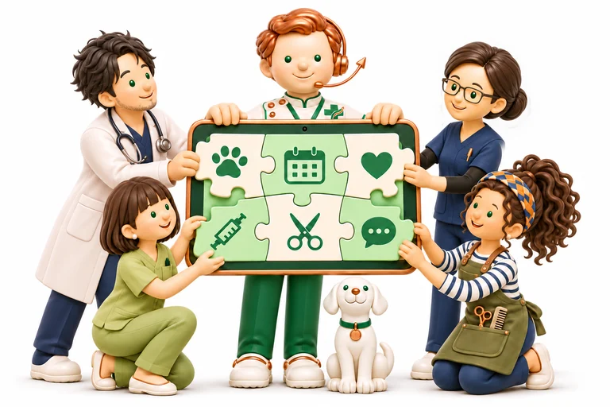

1本につながると、
仕事が連動しはじめる 。
仕事が
別々の

実際の画面
画面を
電話を取らずに、予約が埋まっていく
飼い

1頭のすべてが、1画面に
持病、

話すだけで、カルテの下書き
診察室で

検査と手術の画像を、1頭ごとに
1頭の

定期健診の報告書が、自動でできあがる
検査の

写真と結果を、マイページへ
トリミングの

カードをかざすだけで、出勤と退勤
打刻は

在庫と発注を、タブレットで
品目ごとの

1日の流れが、そのままつながる
受付から
予約
飼い
問診
来院前に
受付
来院を
診察
話すだけで
会計
薬の
お知らせ
健診結果や
動物病院の現場で毎日動いているアプリ
どれも
予約と受付
- LINE・Web からの
予約 （キャンセル待ちも 自動） - ホテルの
部 屋割り - Web 問診と
前日の お知らせ - 受付の
お知らせ （麻酔前の 注意）
診療と記録
- 電子カルテ
（来院歴・検査の 推移・画像を 1頭ずつ） - 音声カルテ
- 入院カルテ
（治療シートと 投薬） - 画像ビューア
（レントゲン・歯科写真） - 紹介状を
選んで 作る
飼い主さんへの報告
- 健康診断の
報告書 （AI が 下書き） - 歯科の
治療報告書 - 結果の
LINE 送信と マイページ - 健康手帳
（体重・ワクチン・ 予防の 記録と、 フィラリア予防の 日の お知らせ） - トリミング・ホテルの
写真を マイページで
経営と事務
- 勤怠
（給与計算は 始める 時期を ご相談） - 在庫と
発注 - 小口現金
（領収書を 読み取り） - 経営の
数字を 見る 画面
学びと症例
- 文献ライブラリ
（論文の 要約を 日本語で） - 症例バンク
院外から
- 携帯で
カルテ・予約・ 入院を 確認 - 休みの
日も 担当の 患者さんを 見られる - 報告書を
家で 仕上げる
使うほど、病院に合っていく
どの
- スタッフが
書く 「キャンセル待ちを
予約表で 一目で 見たい」のように、 困った ことを その場で 書くだけ。 - 直し方の
案が できる AI が、
どこを どう 変えるかの 案を 作ります。 - 院長が
承認する 人が 決める 院長先生の
承認なしに、 本番の 画面は 変わりません。 - 検査してから
反映 検査を
通してから、 本番の 画面に 入れます。 - 依頼した
人に 知らせる 反映したら、
書いた スタッフ本人へ お知らせが 届きます。 - 良い
改善は 全院へ ほかの
医院でも 役立つ改善は、 ラマルクの 機能と して 全院に 届けます。 受け継ぐのは 機能で、 患者さんの 情報では ありません。
まずは資料を、
LINE で受け取ってください。
LINE で
病院名・院長名・